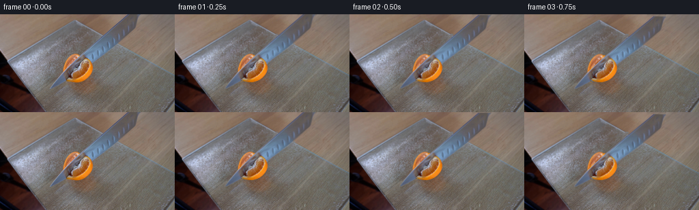
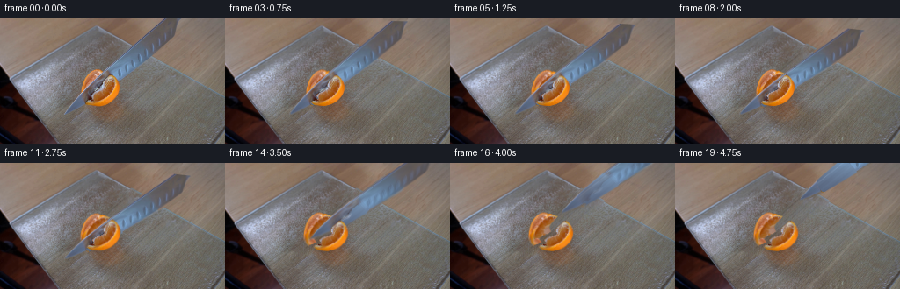

CODING AGENTS AS PIXEL WORLD MODELS
traex/GPT-6-Astra · 0042
点击播放 · 原生 RGB 像素
逐轮保存的候选
回放视频、检查图与代码变化。
每份候选均可单独播放。实际图片检查记录在下方工具轨迹中。
候选 01播放与检查图
点击播放 · 原生 RGB 像素


展开代码变化
--- 上一保存版本
+++ 本次保存版本
@@ -0,0 +1,246 @@
+"""Source-photograph, layered RGB animation of the cutting demonstration."""
+from pathlib import Path
+import math
+import cv2
+import numpy as np
+from PIL import Image
+from scipy import ndimage, sparse
+from scipy.sparse.linalg import factorized
+from scipy.interpolate import CubicSpline
+import artifact_io
+
+ROOT = Path(__file__).resolve().parent
+H, W = 144, 256
+Y, X = np.mgrid[:H, :W].astype(np.float32)
+I = np.asarray(Image.open(ROOT/'first_frame.png').convert('RGB'))
+F = I.astype(np.float32)
+
+def polygon(points, scale=4):
+ a = np.zeros((H*scale, W*scale), np.uint8)
+ cv2.fillPoly(a, [np.round(np.asarray(points)*scale).astype(np.int32)], 255)
+ return cv2.resize(a.astype(np.float32)/255, (W,H), interpolation=cv2.INTER_AREA)
+
+def smooth_polygon(points):
+ p=np.asarray(points,float)
+ p=np.vstack((p,p[0]))
+ cs=CubicSpline(np.arange(len(p)),p,bc_type='periodic')
+ return polygon(cs(np.linspace(0,len(p)-1,400)))
+
+def remap(a, xx, yy, border=cv2.BORDER_REFLECT_101):
+ return cv2.remap(a, xx.astype(np.float32), yy.astype(np.float32), cv2.INTER_LINEAR, borderMode=border)
+
+def mix(bg, fg, a):
+ return bg*(1-a[...,None])+fg*a[...,None]
+
+def poisson(source, target, region):
+ """Gradient-domain photographic background repair (no learned inpainting)."""
+ m=region.copy().astype(bool)
+ # image boundary is given a transplanted boundary condition
+ target=target.copy()
+ edge=np.zeros(m.shape,bool);edge[0]=True;edge[-1]=True;edge[:,0]=True;edge[:,-1]=True
+ target[m&edge]=source[m&edge]
+ m[edge]=False
+ yy,xx=np.where(m)
+ ids=np.full(m.shape,-1,np.int32);ids[m]=np.arange(len(yy))
+ rows=[np.arange(len(yy))];cols=[np.arange(len(yy))];data=[np.full(len(yy),4.)]
+ rhs=np.zeros((len(yy),3),float)
+ for dy,dx in [(0,1),(0,-1),(1,0),(-1,0)]:
+ ny,nx=yy+dy,xx+dx
+ rhs+=source[yy,xx]-source[ny,nx]
+ ins=m[ny,nx]
+ rows.append(np.where(ins)[0]);cols.append(ids[ny[ins],nx[ins]]);data.append(np.full(ins.sum(),-1.))
+ rhs[~ins]+=target[ny[~ins],nx[~ins]]
+ mat=sparse.coo_matrix((np.concatenate(data),(np.concatenate(rows),np.concatenate(cols))),shape=(len(yy),len(yy))).tocsc()
+ solve=factorized(mat)
+ for c in range(3): target[yy,xx,c]=solve(rhs[:,c])
+ return target
+
+# Knife: independently measured silhouette, including its narrow polished tip.
+knife_points=[(186.8,-2),(206.7,-2),(203.2,5),(201.1,10),(198.5,20),
+ (196.6,24),(190.0,30),(178.0,40),(166.2,50),(153.1,60),
+ (140.0,70),(126.4,80),(112.8,90),(99.5,99),(85.3,106),
+ (74.4,110.0),(75.0,107.0),(80.0,99.2),(86.5,91.3),(94.6,82.5),
+ (105.0,72),(116.0,61),(127.0,51),(138.0,41),(149.0,31),
+ (160.0,21),(171.2,11),(182.0,1)]
+K=polygon(knife_points)
+# The illuminated flesh/rind outline of the half fruit.
+fruit_points=[(109.2,57.6),(115.6,59.1),(124.1,62.4),(130.5,66.8),
+ (134.5,72.0),(136.2,78.3),(134.9,84.6),(131.7,90.1),
+ (126.5,94.9),(120.0,98.0),(112.4,99.8),(103.3,99.0),
+ (97.3,96.0),(93.7,91.0),(91.8,84.2),(93.0,77.2),
+ (95.3,70.1),(99.2,64.0),(104.1,59.7)]
+A=smooth_polygon(fruit_points)
+# The near side of the fruit masks the blade where the latter is embedded.
+by=np.array([55,60,63,65,68,71,74,77,80,83,86,89,92,94,97,101,105],float)
+bx=np.array([130,130,127,124,121,118,116.4,116.2,117,111,104.7,104.4,105,99,96.8,94,90],float)
+cut_x=CubicSpline(by,bx,bc_type='natural')(Y)
+front_split=np.clip((X-cut_x)+.5,0,1)
+AF=A*front_split
+AR=A*(1-front_split)
+visible_knife=K*(1-AF)
+
+# Repair the stationary plate behind moving objects with its own texture.
+# The offset is along the glass board's far edge, so that the edge is preserved.
+source=remap(F,X+43,Y+25.8)
+region=ndimage.binary_dilation((K>.02)|(A>.02),iterations=2)
+plate=poisson(source,F,region)
+plate=np.clip(plate,0,255)
+
+# Complete only the portion of the fruit which the original blade conceals.
+# All visible fruit texture is retained, with a polar/mirrored texture extension
+# providing actual photographed rind, pulp and membrane pixels underneath.
+known=(A>.60)&(visible_knife<.1)
+known &= ((F[...,0]>F[...,1]+22)&(F[...,0]>132))
+cx,cy=113.8,79.15
+vx=X-cx;vy=Y-cy
+radius=np.sqrt((vx/21.5)**2+(vy/21.3)**2)
+theta=np.arctan2(vy/21.3,vx/21.5)
+fruit=F.copy()
+unknown=(A>.001)&(visible_knife>.03)
+# Reflection across the slicing axis is the first, locally coherent candidate.
+mirror_x=cx-(Y-cy);mirror_y=cy-(X-cx)
+out=remap(F,mirror_x,mirror_y)
+valid=remap(known.astype(np.float32),mirror_x,mirror_y)>.92
+for ang in [math.pi/2,-math.pi/2,math.pi,math.pi/3,-math.pi/3,2*math.pi/3,-2*math.pi/3]:
+ sx=cx+21.5*radius*np.cos(theta+ang)
+ sy=cy+21.3*radius*np.sin(theta+ang)
+ v=remap(known.astype(np.float32),sx,sy)>.9
+ use=(~valid)&v
+ cand=remap(F,sx,sy)
+ out[use]=cand[use];valid|=v
+# Radially matched samples cover a few core and outermost edge pixels.
+ky,kx=np.where(known)
+kr=radius[ky,kx]
+for yy,xx in zip(*np.where(unknown&~valid)):
+ target_theta=math.pi/2-theta[yy,xx]
+ angle_delta=np.angle(np.exp(1j*(theta[ky,kx]-target_theta)))
+ score=35*(kr-radius[yy,xx])**2+.018*angle_delta**2
+ k=np.argmin(score)
+ out[yy,xx]=F[ky[k],kx[k]]
+# Weak, irregular internal membranes continue the source's real segment texture.
+rng=np.random.default_rng(7481)
+noise=cv2.GaussianBlur(rng.normal(0,1,(H,W)).astype(np.float32),(0,0),.55)
+spokes=np.zeros((H,W),np.float32)
+for ang in [.18,1.0,1.8,2.63,3.44,4.15,5.02,5.74]:
+ d=np.abs(np.sin(theta-ang))*np.sqrt(vx*vx+vy*vy)
+ ray=(np.cos(theta-ang)>0)
+ line=np.exp(-((d+.13*noise)/.33)**2)*ray
+ spokes=np.maximum(spokes,line)
+spokes*=np.clip((.87-radius)*8,0,1)*.15
+out=out*(1-spokes[...,None])+np.array([218,170,115])*spokes[...,None]
+# Feather the concealed-to-visible boundary without bleeding steel into pulp.
+missing=unknown.astype(np.uint8)
+weight=np.clip(ndimage.distance_transform_edt(missing)/1.25,0,1)
+fruit=mix(fruit,out,weight)
+# Any strongly cool boundary pixel belongs to the steel, not fruit.
+fruit[unknown&(F[...,2]>F[...,0]-12)]=out[unknown&(F[...,2]>F[...,0]-12)]
+fruit=np.clip(fruit,0,255).astype(np.float32)
+
+# Reconstruct the smooth steel texture behind the near side of the fruit.
+# The photographed reflection remains at rest and fades as the knife withdraws.
+ys=np.array([0,22,34,48,61,71,86,100,112],float)
+cols=np.array([[94,86,83],[95,91,96],[95,108,126],[107,132,160],
+ [117,150,185],[108,131,160],[95,111,137],[87,101,126],[83,95,113]],float)
+metal=np.stack([np.interp(Y,ys,cols[:,j]) for j in range(3)],axis=2).astype(np.float32)
+u=(X+1.08*Y-186)
+variation=2.5*np.sin(u*.53)+1.5*np.sin(u*1.44)+noise*1.15
+metal+=variation[...,None]*np.array([.6,.85,1.])
+# Slight, long, metallic highlights along the bevel.
+edge_glint=np.exp(-((u-1.5)/.7)**2)*15
+metal+=edge_glint[...,None]
+knife_texture=F.copy()
+knife_texture[AF>.05]=metal[AF>.05]
+# A neutral-light version for when the warm fruit reflection is no longer nearby.
+neutral_knife=knife_texture.copy()
+reflection=(A>.01)&(K>.01)
+neutral_knife[reflection]=metal[reflection]
+
+# Affine photo layers are transformed in premultiplied RGB to keep clean edges.
+def layer(tex,alpha,M):
+ aa=cv2.warpAffine(alpha,M,(W,H),flags=cv2.INTER_LINEAR,borderMode=cv2.BORDER_CONSTANT)
+ prem=cv2.warpAffine(tex*alpha[...,None],M,(W,H),flags=cv2.INTER_LINEAR,borderMode=cv2.BORDER_CONSTANT)
+ return prem,aa
+
+def composite(im,prem,aa):
+ return im*(1-aa[...,None])+prem
+
+def matrix(angle=0,dx=0,dy=0,pivot=(0,0)):
+ a=np.deg2rad(angle);c,s=np.cos(a),np.sin(a)
+ px,py=pivot
+ return np.array([[c,-s,px-c*px+s*py+dx],[s,c,py-s*px-c*py+dy]],np.float32)
+
+def smooth(t):
+ t=np.clip(t,0,1);return t*t*(3-2*t)
+
+# Small newly exposed pulp walls: restrained, photographic texture rather than
+# graphic outlines. They are visible only once the cut separates.
+cut_band=np.exp(-((X-cut_x)/1.15)**2)*A
+walltex=.72*fruit+.28*np.array([163.,101.,40.])
+walltex=np.clip(walltex,0,255).astype(np.float32)
+
+def render(t):
+ # Tip is planted on the board while a gentle rocking/slicing stroke brings
+ # the heel through the fruit; no camera transform is applied.
+ down=smooth(t/2.50)
+ withdraw=smooth((t-2.85)/1.65)
+ separation=smooth((t-2.30)/1.35)
+ # Slow, damped release as the severed quarters settle on the glass.
+ settle=0
+ if t>3.2: settle=.18*np.sin((t-3.2)*10)*np.exp(-(t-3.2)*3)
+ knife_angle=6.2*down-1.8*withdraw
+ axial=.95*np.sin(t*5.2)*np.sin(np.pi*min(t/2.65,1)) if t<2.65 else 0
+ mk=matrix(knife_angle,dx=68*withdraw+axial*.68,
+ dy=-67*withdraw-axial*.70,pivot=(75.5,108.5))
+ rearM=matrix(-3.2*separation,dx=-2.2*separation,
+ dy=-.9*separation+settle,pivot=(99,96))
+ frontM=matrix(4.2*separation,dx=2.7*separation,
+ dy=1.2*separation+settle,pivot=(120,97))
+ # Fruit is slightly compressed under load and rebounds upon separation.
+ squeeze=.018*np.sin(np.pi*down)*(1-withdraw)
+ rearM[1,:]*=1-squeeze;rearM[1,2]+=97*squeeze
+ frontM[1,:]*=1-squeeze;frontM[1,2]+=97*squeeze
+
+ back=plate.copy()
+ rp,ra=layer(fruit,AR,rearM)
+ fp,fa=layer(fruit,AF,frontM)
+ # Soft photographic contact shadows stay attached to their pieces.
+ contact=cv2.GaussianBlur(ra+fa,(0,0),1.8)
+ contact=remap(contact,X-.4,Y-2.1,border=cv2.BORDER_CONSTANT)
+ back*=1-(.075*separation*contact)[...,None]
+ # Knife shadow is faint on the textured transparent board, and vanishes
+ # with increasing height. It never reaches the wooden upper background.
+ dummy,ka=layer(knife_texture,K,mk)
+ ks=cv2.GaussianBlur(ka,(0,0),1.15+1.0*withdraw)
+ ks=remap(ks,X-.7,Y-1.5,border=cv2.BORDER_CONSTANT)
+ board=np.clip((Y-(.6*X-59))/3,0,1)
+ back*=1-(ks*board*.065*(1-.7*withdraw))[...,None]
+ back=composite(back,rp,ra)
+ # The thin inner face of the far quarter becomes visible at release.
+ wp,wa=layer(walltex,cut_band*(1-front_split)*separation*.48,rearM)
+ back=composite(back,wp,wa)
+ tex=knife_texture*(1-withdraw)+neutral_knife*withdraw
+ kp,ka=layer(tex,K,mk)
+ back=composite(back,kp,ka)
+ # The near quarter is in front of the descending blade; the blade slides
+ # out along the cut rather than incorrectly crossing through its rind.
+ back=composite(back,fp,fa)
+ wp,wa=layer(walltex,cut_band*front_split*separation*.32,frontM)
+ back=composite(back,wp,wa)
+ return np.clip(back,0,255)
+
+frames=[I.copy()]
+# Small exposure-time integration produces modest, physically consistent motion
+# blur on moving photo layers, leaving the locked-off background untouched.
+for i in range(1,20):
+ t=i/4
+ samples=[render(t+d) for d in [-.025,0,.025]]
+ f=np.mean(samples,axis=0)
+ frames.append(np.clip(np.rint(f),0,255).astype(np.uint8))
+frames=np.stack(frames)
+# Save local reconstruction candidates for numerical inspection.
+(ROOT/'.tmp').mkdir(exist_ok=True)
+np.savez_compressed(ROOT/'.tmp'/'candidate.npz',frames=frames)
+for name,img in [('plate',plate),('fruit_texture',fruit),('knife_texture',knife_texture)]:
+ Image.fromarray(np.clip(img,0,255).astype(np.uint8)).save(ROOT/'.tmp'/f'{name}.png')
+artifact_io.save(frames, ROOT)
+print('Saved',frames.shape,frames.dtype,'first frame exact:',np.array_equal(frames[0],I))
候选 02播放与检查图
点击播放 · 原生 RGB 像素

展开代码变化
--- 上一保存版本
+++ 本次保存版本
@@ -66,8 +66,8 @@
# The illuminated flesh/rind outline of the half fruit.
fruit_points=[(109.2,57.6),(115.6,59.1),(124.1,62.4),(130.5,66.8),
(134.5,72.0),(136.2,78.3),(134.9,84.6),(131.7,90.1),
- (126.5,94.9),(120.0,98.0),(112.4,99.8),(103.3,99.0),
- (97.3,96.0),(93.7,91.0),(91.8,84.2),(93.0,77.2),
+ (127.2,95.0),(120.0,98.6),(112.4,100.0),(103.3,99.4),
+ (97.3,97.0),(93.7,91.0),(91.8,84.2),(93.0,77.2),
(95.3,70.1),(99.2,64.0),(104.1,59.7)]
A=smooth_polygon(fruit_points)
# The near side of the fruit masks the blade where the latter is embedded.
@@ -117,6 +117,16 @@
score=35*(kr-radius[yy,xx])**2+.018*angle_delta**2
k=np.argmin(score)
out[yy,xx]=F[ky[k],kx[k]]
+# Rind cannot be duplicated in the interior of the newly revealed cut face.
+# Restrict these few transplanted samples to the photograph's actual pulp.
+pulp=known&(radius<.87)&(F[...,0]<211)&(F[...,2]>20)
+py,px=np.where(pulp)
+pr=radius[py,px]
+for yy,xx in zip(*np.where(unknown&(radius<.85)&(out[...,0]>214)&(out[...,2]<100))):
+ desired_angle=np.pi/2-theta[yy,xx]
+ ad=np.angle(np.exp(1j*(theta[py,px]-desired_angle)))
+ k=np.argmin(30*(pr-radius[yy,xx])**2+.05*ad**2)
+ out[yy,xx]=F[py[k],px[k]]
# Weak, irregular internal membranes continue the source's real segment texture.
rng=np.random.default_rng(7481)
noise=cv2.GaussianBlur(rng.normal(0,1,(H,W)).astype(np.float32),(0,0),.55)
@@ -201,8 +211,12 @@
frontM[1,:]*=1-squeeze;frontM[1,2]+=97*squeeze
back=plate.copy()
- rp,ra=layer(fruit,AR,rearM)
- fp,fa=layer(fruit,AF,frontM)
+ # Initially the blade's curved, embedded occlusion sets the visible face.
+ # Once released, the actual separation follows a single planar knife cut.
+ plane_front=np.clip(X+Y-193.5+.5,0,1)
+ split=front_split*(1-separation)+plane_front*separation
+ rp,ra=layer(fruit,A*(1-split),rearM)
+ fp,fa=layer(fruit,A*split,frontM)
# Soft photographic contact shadows stay attached to their pieces.
contact=cv2.GaussianBlur(ra+fa,(0,0),1.8)
contact=remap(contact,X-.4,Y-2.1,border=cv2.BORDER_CONSTANT)
@@ -216,7 +230,8 @@
back*=1-(ks*board*.065*(1-.7*withdraw))[...,None]
back=composite(back,rp,ra)
# The thin inner face of the far quarter becomes visible at release.
- wp,wa=layer(walltex,cut_band*(1-front_split)*separation*.48,rearM)
+ band=np.exp(-((X+Y-193.5)/1.05)**2)*A
+ wp,wa=layer(walltex,band*(1-split)*separation*.48,rearM)
back=composite(back,wp,wa)
tex=knife_texture*(1-withdraw)+neutral_knife*withdraw
kp,ka=layer(tex,K,mk)
@@ -224,7 +239,7 @@
# The near quarter is in front of the descending blade; the blade slides
# out along the cut rather than incorrectly crossing through its rind.
back=composite(back,fp,fa)
- wp,wa=layer(walltex,cut_band*front_split*separation*.32,frontM)
+ wp,wa=layer(walltex,band*split*separation*.32,frontM)
back=composite(back,wp,wa)
return np.clip(back,0,255)
候选 03播放与检查图
可观测工具轨迹
实际执行的命令与返回图片。
命令 1exit 0
/bin/bash -lc "ls -la && cat prompt.txt && printf '\\n---RULES---\\n' && cat GENERATION_RULES.md"
命令 2exit 0
/bin/bash -lc "cat artifact_io.py && python - <<'PY'
from PIL import Image
import numpy as np
im=np.array(Image.open('first_frame.png'))
print(im.shape, im.dtype)
print('corners', im[0,0], im[0,-1], im[-1,0], im[-1,-1])
np.save('.tmp/input_rgb.npy', im)
# coarse numeric image synopsis: RGB medians for blocks
for y in range(0,144,8):
print('y',y, ['%02x%02x%02x'%tuple(np.median(im[y:y+8,x:x+8].reshape(-1,3),axis=0).astype(int)) for x in range(0,256,8)])
PY"命令 3exit 0
/bin/bash -lc "python - <<'PY'
from PIL import Image
import numpy as np
from scipy.ndimage import label
im=np.array(Image.open('first_frame.png')).astype(float)
r,g,b=im.transpose(2,0,1)
orange=(r>140)&(r>g*1.35)&(g>b*1.45)
blue=(b>r*1.1)&(b>g*1.05)&(b>65)
skin=(r>130)&(r>g*1.25)&(b>g*.65)&(b<g*.98)
for name,m in [('orange',orange),('blue',blue),('skin',skin)]:
labs,n=label(m)
print(name)
for k in range(1,n+1):
yy,xx=np.where(labs==k)
if len(xx)>4: print(len(xx),'bbox',xx.min(),yy.min(),xx.max(),yy.max(), 'center',xx.mean(),yy.mean())
print('crop pixel classes 2x2; O orange F pale-orange H skin B blue :gray .brown #dark')
for y in range(0,120,2):
s=''
for x in range(0,212,2):
rr,gg,bb=np.median(im[y:y+2,x:x+2].reshape(-1,3),axis=0)
if rr>190 and rr>1.3*gg and gg>bb*1.5: c='O'
elif rr>130 and rr>1.35*gg and gg>bb*1.45:c='o'
elif rr>130 and rr>gg*1.25 and bb>gg*.65 and bb<gg*.98:c='H'
elif bb>rr*1.1 and bb>gg*1.05 and bb>65:c='B'
elif max(rr,gg,bb)<50:c='#'
elif max(rr,gg,bb)-min(rr,gg,bb)<15:c=':'
elif rr>gg*1.1 and gg>bb*1.05: c='.'
else:c='-'
s+=c
print('%03d'%y,s)
PY"命令 4exit 0
/bin/bash -lc "python - <<'PY'
import numpy as np
from PIL import Image
im=np.array(Image.open('first_frame.png'))
# normalized RGB numeric snippets near cutting object
for y in [0,5,10,20,30,40,50,60,70,80,90,100,110]:
print('\\nY=',y)
for x in range(max(65,int(185-y*1.2)-25),min(211,int(185-y*.9)+30),2):
print('%d:%s'%(x,','.join(map(str, im[y,x]))),end=' ')
print()
PY"命令 5exit 0
/bin/bash -lc "python - <<'PY'
from PIL import Image
import numpy as np
im=np.array(Image.open('first_frame.png')).astype(float)
# crop full resolution with hue based character clusters
r,g,b=im.transpose(2,0,1)
# show rows orange and blade, flesh detail using mapped actual colors
print('Legend rind O/orange o, flesh dark v, pale p, bluish B, metal m, board -, red reflective R')
for y in range(50,106):
s=''
for x in range(85,142):
rr,gg,bb=im[y,x]
if rr>210 and rr>gg*1.4 and gg>bb*1.6:c='O'
elif rr>150 and rr>gg*1.4 and gg>bb*1.5:c='o'
elif rr>110 and rr>gg*1.4 and gg>bb*1.5:c='v'
elif rr>150 and rr>gg*1.2 and gg>bb*1.05:c='p'
elif rr>120 and rr>gg*1.45 and bb>gg*.65:c='R'
elif bb>rr*1.12 and bb>gg*1.06:c='B'
elif max(rr,gg,bb)-min(rr,gg,bb)<22:c='m'
elif rr>gg*1.3:c='r'
else:c='-'
s+=c
print('%03d'%y,s)
PY"命令 6exit 0
/bin/bash -lc "python - <<'PY'
import importlib.util
for n in ['cv2','scipy','numpy','PIL']:print(n, bool(importlib.util.find_spec(n)))
# grey region statistics and silhouette boundaries as observed rows
import numpy as np
from PIL import Image
im=np.array(Image.open('first_frame.png')).astype(float)
for y in range(0,111,5):
# blues, boundary heuristic
r,g,b=im[y].T
sel=(b-r>4)&(np.arange(256)>65)&(np.arange(256)<210)
spans=np.where(sel)[0]
print(y,spans.tolist())
PY"命令 7exit 0
/bin/bash -lc "python - <<'PY'
from PIL import Image
import numpy as np
im=np.array(Image.open('first_frame.png'))
for y in [58,60,62,64,66,68,70,72,74,76,78,80,82,84,86,88,90,92,94,96,98,100,104,108]:
print('\\ny',y)
for x in range(88 if y>75 else 105,151):
r,g,b=map(int,im[y,x])
print('%d=%d,%d,%d'%(x,r,g,b),end='; ')
print()
PY"命令 8exit 0
/bin/bash -lc "python - <<'PY'
import cv2, numpy as np
p=np.array([(110,58),(104,60),(100,64),(96,69),(94,75),(92,82),(94,89),(99,97),(109,100),(119,98),(127,94),(132,88),(136,80),(135,74),(131,68),(125,63)],np.float32)
print(cv2.fitEllipse(p))
# inspect empty table board average colors nearby
im=cv2.imread('first_frame.png')[:,:,::-1]
for y in range(0,121,10):
print(y, [(x,np.mean(im[max(y-2,0):y+3,x:x+5],axis=(0,1)).round(1).tolist()) for x in [70,90,110,140,160,180,200,220]])
PY"命令 9exit 0
/bin/bash -lc "mkdir -p .tmp && cat > .tmp/check_geometry.py <<'PY'
import numpy as np, cv2
from PIL import Image
im=np.array(Image.open('first_frame.png'))
h,w=im.shape[:2]
poly=np.array([(186,-3),(207,-3),(203,5),(201,10),(198,20),(196,24),(188,31),(176,41),(164,51),(150,61),(138,71),(126,80),(112,89),(103,95),(93,100),(85,105),(75,110),(75,107),(80,99),(87,91),(96,81),(106,71),(117,61),(128,51),(139,41),(150,31),(161,21),(173,11)],np.int32)
km=np.zeros((h,w),np.uint8);cv2.fillPoly(km,[poly],255)
# numeric report of pixels potentially missed near edges
imc=im.astype(float);r,g,b=imc.transpose(2,0,1)
blue=(b-r>6)&(b-g>5)
for y in range(0,110,5):
xl=np.where(km[y])[0]
print(y,(xl.min(),xl.max()) if len(xl) else None, [(x,im[y,x].tolist()) for x in range(max(0,xl.min()-1),xl.min()+3)] if len(xl) else [])
np.save('.tmp/knife_mask0.npy', km)
PY
python .tmp/check_geometry.py"命令 10exit 0
/bin/bash -lc "cat > generate.py <<'PY'
\"\"\"Source-photograph, layered RGB animation of the cutting demonstration.\"\"\"
from pathlib import Path
import math
import cv2
import numpy as np
from PIL import Image
from scipy import ndimage, sparse
from scipy.sparse.linalg import factorized
from scipy.interpolate import CubicSpline
import artifact_io
ROOT = Path(__file__).resolve().parent
H, W = 144, 256
Y, X = np.mgrid[:H, :W].astype(np.float32)
I = np.asarray(Image.open(ROOT/'first_frame.png').convert('RGB'))
F = I.astype(np.float32)
def polygon(points, scale=4):
a = np.zeros((H*scale, W*scale), np.uint8)
cv2.fillPoly(a, [np.round(np.asarray(points)*scale).astype(np.int32)], 255)
return cv2.resize(a.astype(np.float32)/255, (W,H), interpolation=cv2.INTER_AREA)
def smooth_polygon(points):
p=np.asarray(points,float)
p=np.vstack((p,p[0]))
cs=CubicSpline(np.arange(len(p)),p,bc_type='periodic')
return polygon(cs(np.linspace(0,len(p)-1,400)))
def remap(a, xx, yy, border=cv2.BORDER_REFLECT_101):
return cv2.remap(a, xx.astype(np.float32), yy.astype(np.float32), cv2.INTER_LINEAR, borderMode=border)
def mix(bg, fg, a):
return bg*(1-a[...,None])+fg*a[...,None]
def poisson(source, target, region):
\"\"\"Gradient-domain photographic background repair (no learned inpainting).\"\"\"
m=region.copy().astype(bool)
# image boundary is given a transplanted boundary condition
target=target.copy()
edge=np.zeros(m.shape,bool);edge[0]=True;edge[-1]=True;edge[:,0]=True;edge[:,-1]=True
target[m&edge]=source[m&edge]
m[edge]=False
yy,xx=np.where(m)
ids=np.full(m.shape,-1,np.int32);ids[m]=np.arange(len(yy))
rows=[np.arange(len(yy))];cols=[np.arange(len(yy))];data=[np.full(len(yy),4.)]
rhs=np.zeros((len(yy),3),float)
for dy,dx in [(0,1),(0,-1),(1,0),(-1,0)]:
ny,nx=yy+dy,xx+dx
rhs+=source[yy,xx]-source[ny,nx]
ins=m[ny,nx]
rows.append(np.where(ins)[0]);cols.append(ids[ny[ins],nx[ins]]);data.append(np.full(ins.sum(),-1.))
rhs[~ins]+=target[ny[~ins],nx[~ins]]
mat=sparse.coo_matrix((np.concatenate(data),(np.concatenate(rows),np.concatenate(cols))),shape=(len(yy),len(yy))).tocsc()
solve=factorized(mat)
for c in range(3): target[yy,xx,c]=solve(rhs[:,c])
return target
# Knife: independently measured silhouette, including its narrow polished tip.
knife_points=[(186.8,-2),(206.7,-2),(203.2,5),(201.1,10),(198.5,20),
(196.6,24),(190.0,30),(178.0,40),(166.2,50),(153.1,60),
(140.0,70),(126.4,80),(112.8,90),(99.5,99),(85.3,106),
(74.4,110.0),(75.0,107.0),(80.0,99.2),(86.5,91.3),(94.6,82.5),
(105.0,72),(116.0,61),(127.0,51),(138.0,41),(149.0,31),
(160.0,21),(171.2,11),(182.0,1)]
K=polygon(knife_points)
# The illuminated flesh/rind outline of the half fruit.
fruit_points=[(109.2,57.6),(115.6,59.1),(124.1,62.4),(130.5,66.8),
(134.5,72.0),(136.2,78.3),(134.9,84.6),(131.7,90.1),
(126.5,94.9),(120.0,98.0),(112.4,99.8),(103.3,99.0),
(97.3,96.0),(93.7,91.0),(91.8,84.2),(93.0,77.2),
(95.3,70.1),(99.2,64.0),(104.1,59.7)]
A=smooth_polygon(fruit_points)
# The near side of the fruit masks the blade where the latter is embedded.
by=np.array([55,60,63,65,68,71,74,77,80,83,86,89,92,94,97,101,105],float)
bx=np.array([130,130,127,124,121,118,116.4,116.2,117,111,104.7,104.4,105,99,96.8,94,90],float)
cut_x=CubicSpline(by,bx,bc_type='natural')(Y)
front_split=np.clip((X-cut_x)+.5,0,1)
AF=A*front_split
AR=A*(1-front_split)
visible_knife=K*(1-AF)
# Repair the stationary plate behind moving objects with its own texture.
# The offset is along the glass board's far edge, so that the edge is preserved.
source=remap(F,X+43,Y+25.8)
region=ndimage.binary_dilation((K>.02)|(A>.02),iterations=2)
plate=poisson(source,F,region)
plate=np.clip(plate,0,255)
# Complete only the portion of the fruit which the original blade conceals.
# All visible fruit texture is retained, with a polar/mirrored texture extension
# providing actual photographed rind, pulp and membrane pixels underneath.
known=(A>.60)&(visible_knife<.1)
known &= ((F[...,0]>F[...,1]+22)&(F[...,0]>132))
cx,cy=113.8,79.15
vx=X-cx;vy=Y-cy
radius=np.sqrt((vx/21.5)**2+(vy/21.3)**2)
theta=np.arctan2(vy/21.3,vx/21.5)
fruit=F.copy()
unknown=(A>.001)&(visible_knife>.03)
# Reflection across the slicing axis is the first, locally coherent candidate.
mirror_x=cx-(Y-cy);mirror_y=cy-(X-cx)
out=remap(F,mirror_x,mirror_y)
valid=remap(known.astype(np.float32),mirror_x,mirror_y)>.92
for ang in [math.pi/2,-math.pi/2,math.pi,math.pi/3,-math.pi/3,2*math.pi/3,-2*math.pi/3]:
sx=cx+21.5*radius*np.cos(theta+ang)
sy=cy+21.3*radius*np.sin(theta+ang)
v=remap(known.astype(np.float32),sx,sy)>.9
use=(~valid)&v
cand=remap(F,sx,sy)
out[use]=cand[use];valid|=v
# Radially matched samples cover a few core and outermost edge pixels.
ky,kx=np.where(known)
kr=radius[ky,kx]
for yy,xx in zip(*np.where(unknown&~valid)):
target_theta=math.pi/2-theta[yy,xx]
angle_delta=np.angle(np.exp(1j*(theta[ky,kx]-target_theta)))
score=35*(kr-radius[yy,xx])**2+.018*angle_delta**2
k=np.argmin(score)
out[yy,xx]=F[ky[k],kx[k]]
# Weak, irregular internal membranes continue the source's real segment texture.
rng=np.random.default_rng(7481)
noise=cv2.GaussianBlur(rng.normal(0,1,(H,W)).astype(np.float32),(0,0),.55)
spokes=np.zeros((H,W),np.float32)
for ang in [.18,1.0,1.8,2.63,3.44,4.15,5.02,5.74]:
d=np.abs(np.sin(theta-ang))*np.sqrt(vx*vx+vy*vy)
ray=(np.cos(theta-ang)>0)
line=np.exp(-((d+.13*noise)/.33)**2)*ray
spokes=np.maximum(spokes,line)
spokes*=np.clip((.87-radius)*8,0,1)*.15
out=out*(1-spokes[...,None])+np.array([218,170,115])*spokes[...,None]
# Feather the concealed-to-visible boundary without bleeding steel into pulp.
missing=unknown.astype(np.uint8)
weight=np.clip(ndimage.distance_transform_edt(missing)/1.25,0,1)
fruit=mix(fruit,out,weight)
# Any strongly cool boundary pixel belongs to the steel, not fruit.
fruit[unknown&(F[...,2]>F[...,0]-12)]=out[unknown&(F[...,2]>F[...,0]-12)]
fruit=np.clip(fruit,0,255).astype(np.float32)
# Reconstruct the smooth steel texture behind the near side of the fruit.
# The photographed reflection remains at rest and fades as the knife withdraws.
ys=np.array([0,22,34,48,61,71,86,100,112],float)
cols=np.array([[94,86,83],[95,91,96],[95,108,126],[107,132,160],
[117,150,185],[108,131,160],[95,111,137],[87,101,126],[83,95,113]],float)
metal=np.stack([np.interp(Y,ys,cols[:,j]) for j in range(3)],axis=2).astype(np.float32)
u=(X+1.08*Y-186)
variation=2.5*np.sin(u*.53)+1.5*np.sin(u*1.44)+noise*1.15
metal+=variation[...,None]*np.array([.6,.85,1.])
# Slight, long, metallic highlights along the bevel.
edge_glint=np.exp(-((u-1.5)/.7)**2)*15
metal+=edge_glint[...,None]
knife_texture=F.copy()
knife_texture[AF>.05]=metal[AF>.05]
# A neutral-light version for when the warm fruit reflection is no longer nearby.
neutral_knife=knife_texture.copy()
reflection=(A>.01)&(K>.01)
neutral_knife[reflection]=metal[reflection]
# Affine photo layers are transformed in premultiplied RGB to keep clean edges.
def layer(tex,alpha,M):
aa=cv2.warpAffine(alpha,M,(W,H),flags=cv2.INTER_LINEAR,borderMode=cv2.BORDER_CONSTANT)
prem=cv2.warpAffine(tex*alpha[...,None],M,(W,H),flags=cv2.INTER_LINEAR,borderMode=cv2.BORDER_CONSTANT)
return prem,aa
def composite(im,prem,aa):
return im*(1-aa[...,None])+prem
def matrix(angle=0,dx=0,dy=0,pivot=(0,0)):
a=np.deg2rad(angle);c,s=np.cos(a),np.sin(a)
px,py=pivot
return np.array([[c,-s,px-c*px+s*py+dx],[s,c,py-s*px-c*py+dy]],np.float32)
def smooth(t):
t=np.clip(t,0,1);return t*t*(3-2*t)
# Small newly exposed pulp walls: restrained, photographic texture rather than
# graphic outlines. They are visible only once the cut separates.
cut_band=np.exp(-((X-cut_x)/1.15)**2)*A
walltex=.72*fruit+.28*np.array([163.,101.,40.])
walltex=np.clip(walltex,0,255).astype(np.float32)
def render(t):
# Tip is planted on the board while a gentle rocking/slicing stroke brings
# the heel through the fruit; no camera transform is applied.
down=smooth(t/2.50)
withdraw=smooth((t-2.85)/1.65)
separation=smooth((t-2.30)/1.35)
# Slow, damped release as the severed quarters settle on the glass.
settle=0
if t>3.2: settle=.18*np.sin((t-3.2)*10)*np.exp(-(t-3.2)*3)
knife_angle=6.2*down-1.8*withdraw
axial=.95*np.sin(t*5.2)*np.sin(np.pi*min(t/2.65,1)) if t<2.65 else 0
mk=matrix(knife_angle,dx=68*withdraw+axial*.68,
dy=-67*withdraw-axial*.70,pivot=(75.5,108.5))
rearM=matrix(-3.2*separation,dx=-2.2*separation,
dy=-.9*separation+settle,pivot=(99,96))
frontM=matrix(4.2*separation,dx=2.7*separation,
dy=1.2*separation+settle,pivot=(120,97))
# Fruit is slightly compressed under load and rebounds upon separation.
squeeze=.018*np.sin(np.pi*down)*(1-withdraw)
rearM[1,:]*=1-squeeze;rearM[1,2]+=97*squeeze
frontM[1,:]*=1-squeeze;frontM[1,2]+=97*squeeze
back=plate.copy()
rp,ra=layer(fruit,AR,rearM)
fp,fa=layer(fruit,AF,frontM)
# Soft photographic contact shadows stay attached to their pieces.
contact=cv2.GaussianBlur(ra+fa,(0,0),1.8)
contact=remap(contact,X-.4,Y-2.1,border=cv2.BORDER_CONSTANT)
back*=1-(.075*separation*contact)[...,None]
# Knife shadow is faint on the textured transparent board, and vanishes
# with increasing height. It never reaches the wooden upper background.
dummy,ka=layer(knife_texture,K,mk)
ks=cv2.GaussianBlur(ka,(0,0),1.15+1.0*withdraw)
ks=remap(ks,X-.7,Y-1.5,border=cv2.BORDER_CONSTANT)
board=np.clip((Y-(.6*X-59))/3,0,1)
back*=1-(ks*board*.065*(1-.7*withdraw))[...,None]
back=composite(back,rp,ra)
# The thin inner face of the far quarter becomes visible at release.
wp,wa=layer(walltex,cut_band*(1-front_split)*separation*.48,rearM)
back=composite(back,wp,wa)
tex=knife_texture*(1-withdraw)+neutral_knife*withdraw
kp,ka=layer(tex,K,mk)
back=composite(back,kp,ka)
# The near quarter is in front of the descending blade; the blade slides
# out along the cut rather than incorrectly crossing through its rind.
back=composite(back,fp,fa)
wp,wa=layer(walltex,cut_band*front_split*separation*.32,frontM)
back=composite(back,wp,wa)
return np.clip(back,0,255)
frames=[I.copy()]
# Small exposure-time integration produces modest, physically consistent motion
# blur on moving photo layers, leaving the locked-off background untouched.
for i in range(1,20):
t=i/4
samples=[render(t+d) for d in [-.025,0,.025]]
f=np.mean(samples,axis=0)
frames.append(np.clip(np.rint(f),0,255).astype(np.uint8))
frames=np.stack(frames)
# Save local reconstruction candidates for numerical inspection.
(ROOT/'.tmp').mkdir(exist_ok=True)
np.savez_compressed(ROOT/'.tmp'/'candidate.npz',frames=frames)
for name,img in [('plate',plate),('fruit_texture',fruit),('knife_texture',knife_texture)]:
Image.fromarray(np.clip(img,0,255).astype(np.uint8)).save(ROOT/'.tmp'/f'{name}.png')
artifact_io.save(frames, ROOT)
print('Saved',frames.shape,frames.dtype,'first frame exact:',np.array_equal(frames[0],I))
PY
python generate.py"命令 11exit 0
/bin/bash -lc "python - <<'PY'
import generate as g
import numpy as np,cv2
from scipy.ndimage import label
r0=g.render(0)
d=np.abs(r0-g.F)
print('render0 all MAE',d.mean(),'p90 max',np.percentile(d.max(2),[50,90,95,99,100]),'pixels >25',np.sum(d.max(2)>25))
for name,m in [('fruit',g.A>.1),('knife',g.K>.1),('bg',(g.K+g.A)<.01),('uncovered_rear',(g.AR>.8)&(g.K<.01)),('front',g.AF>.8)]:
print(name,m.sum(), d[m].mean(),np.quantile(d[m],[.5,.9,.99]))
fs=np.load('.tmp/candidate.npz')['frames'].astype(float)
for i in range(20):
d=np.abs(fs[i]-fs[max(0,i-1)])
rgb=fs[i];r,b1,b2=rgb.transpose(2,0,1)
orange=(r>145)&(r>b1*1.35)&(b1>b2*1.4)&(g.X>70)&(g.X<155)&(g.Y>50)&(g.Y<110)
labs,n=label(orange)
comps=[]
for k in range(1,n+1):
yy,xx=np.where(labs==k)
if len(xx)>30:comps.append((len(xx),(int(xx.min()),int(yy.min()),int(xx.max()),int(yy.max()))))
print(i,'mae',round(d.mean(),2),'changed',np.sum(d.max(2)>10),'orange',orange.sum(),comps)
print('final fruit pixel classes')
im=fs[-1]
for y in range(52,108,2):
s=''
for x in range(83,147):
rr,gg,bb=im[y,x]
if rr>210 and rr>gg*1.4 and gg>bb*1.6:c='O'
elif rr>150 and rr>gg*1.4 and gg>bb*1.5:c='o'
elif rr>110 and rr>gg*1.4 and gg>bb*1.5:c='v'
elif rr>150 and rr>gg*1.2 and gg>bb*1.05:c='p'
elif rr>120 and rr>gg*1.45 and bb>gg*.65:c='R'
elif bb>rr*1.12 and bb>gg*1.06:c='B'
elif max(rr,gg,bb)-min(rr,gg,bb)<22:c='m'
elif rr>gg*1.3:c='r'
else:c='-'
s+=c
print('%03d'%y,s)
PY"命令 12exit 0
/bin/bash -lc "python - <<'PY' import generate as g import numpy as np r=g.render(0);d=np.max(np.abs(r-g.F),axis=2) ix=np.argsort(d.ravel())[-20:][::-1] for v in ix: y,x=np.unravel_index(v,d.shape) print(x,y,'diff',round(d[y,x],1),'rgb',g.I[y,x],r[y,x].astype(int),'A,K,front',g.A[y,x],g.K[y,x],g.AF[y,x]) PY"
命令 13exit 0
/bin/bash -lc "python generate.py && python - <<'PY'
import numpy as np
from PIL import Image
f=np.load('.tmp/candidate.npz')['frames']
im=f[-1].astype(float)
for y in range(56,103,2):
s=''
for x in range(85,145):
r,g,b=im[y,x]
if r>210 and r>g*1.4 and g>b*1.6:c='O'
elif r>150 and r>g*1.4 and g>b*1.5:c='o'
elif r>110 and r>g*1.4 and g>b*1.5:c='v'
elif r>150 and r>g*1.2 and g>b*1.05:c='p'
elif b>r*1.12 and b>g*1.06:c='B'
elif max(r,g,b)-min(r,g,b)<22:c='m'
else:c='-'
s+=c
print(y,s)
print('shape and range',f.shape,f.min(),f.max())
print('first matches',np.array_equal(f[0],np.asarray(Image.open('first_frame.png'))))
PY"命令 14exit 0
/bin/bash -lc "python - <<'PY'
from pathlib import Path
import numpy as np
from PIL import Image
p=np.load('pixels.npz')['pixels']
a=np.stack([np.array(Image.open(f'frames/{i:02d}.png')) for i in range(20)])
assert a.shape==(20,144,256,3) and a.dtype==np.uint8
assert np.array_equal(a[0],np.array(Image.open('first_frame.png')))
assert p.shape==(144,256,20)
assert len(list(Path('frames').glob('*.png')))==20
print('Verified: 20 RGB frames, 256x144, 4 fps; exact initial frame.')
print('Outputs: index.html, pixels.npz, frames/; runnable generate.py')
PY"保存候选 3 份；完成命令 14 次；可验证图片返回 0 张。原始 API 响应与完整日志保留在本地。